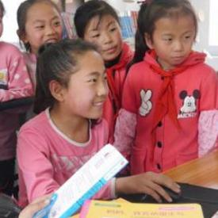

How are they connected?
Target 4.5 - By 2030, eliminate gender disparities in education and ensure equal access to all levels of education and vocational training for the vulnerable, including persons with disabilities, indigenous peoples and children in vulnerable situations
Overview - Target 4.5 looks at how equal all people are when it comes to access to education at all levels. This includes equality in many forms (such as female/male, rural/urban, bottom/top wealth quintile and others such as disability status, indigenous peoples and conflict-affected), but has a large focus on equality between male and female students. This is extremely important because educating girls would cause a chain reaction that benefits many other aspects of life. Unfortunately, in many areas of the world girls are significantly unequal when it comes to access to education. Educating girls will have many positive effects. These include: a decrease in infant and maternal mortality; more female doctors and nurses that can aid with the medical care of infants and mothers; educated women are inherently more likely to send her children to school causing a positive snowball effect; fewer child marriages; a decrease in unwanted exponential population growth; a decrease violence against womenl; and an increased female political involvement, which often results in less support for military and terroristic violence by the government.
What is GPI?
Ratio of the female primary completion rate to the male primary completion rate. It is calculated by dividing the female value for the indicator by the male value for the indicator. A GPI equal to 1 indicates parity between females and males. In general, a value less than 1 indicates disparity in favor of males and a value greater than 1 indicates disparity in favor of females.
—-—-—-—-—-—-—-—-—-— Charities —-—-—-—-—-—-—-—-—-—
The Malala Fund
The Malala Fund is an organization that aims to promote and fight for girls' right to education. The Malala Fund was started by Malala Yousafza, an activist for equal education who was shot when trying to attend school in Afghanistan. She received the Nobel Peace Prize in 2014 for her efforts. The Malala Fund operates in 5 countries, Afghanistan, Brazil, India, Nigeria, Pakistan, and the Syria Region. There, they work with local organizations such as Teach for Afghanistan, a teacher recruitment and training organization that aims to increase the number of women teachers in Afghanistan public schools, to achieve various goals that relate to girls' education. While their initiatives branch anywhere from building schools to training teachers, they have a focus on areas where oppressive governments or violent terrorist organizations pose a threat to girls who try to get an education.
Plan International
Plan International is committed to making a lasting impact on the lives of the most vulnerable and excluded children while promoting greater equality for girls. We aim not only to improve the daily lives of girls but also to advance their position and value in society, whilst actively working with boys and young men to champion gender equality. We believe in advancing children’s rights in all contexts, including during conflict and emergencies, where girls are faced with additional dangers. Our programmes deliver lasting change against discriminatory norms, policies and laws. We listen to the voices of children in the community, especially girls whose views and needs are frequently overlooked, to ensure that our work is relevant and effective.
—-—-—-—-—-—-—-—-—-— News —-—-—-—-—-—-—-—-—-—
Girls are being denied access to certain sports in PE simply because of their gender
Girls in the UK are often told that they can do whatever they want. That nothing can stop them. If they can dream it, they can achieve it. And yet, when it comes to accessing and becoming proficient in sports and activities in PE lessons, they are being stopped before they can even begin.
Girls thrive with women teachers: a study in Francophone Africa
Over the past few decades most advanced countries have witnessed two striking reversals of the gender gap. First, teaching has become a profession dominated by women. This is particularly true at primary school level, where 84.5% of teachers across all countries classified as “developed” by UNESCO are women.
Jobs and paid-for schooling can keep Tanzanian girls from early marriages
Creating more opportunities for young women and girls to work and earn money is a possible solution to early marriages. Subsidising secondary education to keep poorer girls in school is another.